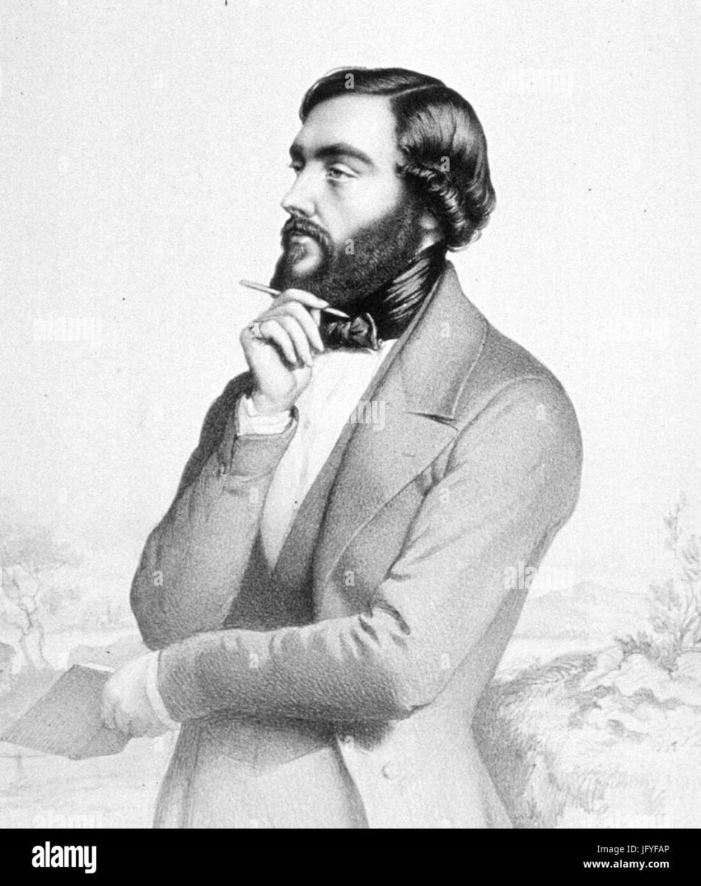

Từ tháng 6 năm 1842 đến tháng 10 năm 1843, người dân và giới trí thức Paris hồi hộp ngóng chờ tờ báo Le Journal des débats mỗi ngày để đón đọc phần mới nhất trong bộ tiểu thuyết Bí mật thành Paris của nhà văn Eugène Sue.
Câu chuyện phiêu lưu hồi hộp, li kỳ của Rodolphe – một Đại công tước có trái tim nhân hậu và nghĩa hiệp – đã thu hút sự quan tâm của tất cả các tầng lớp xã hội tại Paris lúc bấy giờ. Lấy cảm hứng từ nguyên mẫu ngoài đời thực – Eugène François Vidocq, từ một tội phạm khét tiếng, sau đó hoàn lương trở thành cảnh sát đặc nhiệm tài ba, Eugène Sue đã xây dựng nhân vật Rodolphe như “một vị thám tử” cải trang, thâm nhập vào các khu ổ chuột của Paris để ngăn ngừa tội ác và thực thi công lý.
Bộ tiểu thuyết đã dẫn dắt người đọc đi vào những ngõ hẻm của từng khu phố, qua những lối đi hôi hám tối tăm, để đến với những căn nhà tồi tàn, những quán rượu nhớp nhúa, nơi tá túc của những con người cùng khổ và giới lưu manh tại Paris…
“Bí mật thành Paris là một trong những tác phẩm đáng kinh ngạc nhất của văn chương Pháp thế kỷ XIX. Thậm chí, nhiều độc giả bị cuốn theo các tình tiết trong câu chuyện, đã gửi cho tác giả phần kết thúc tác phẩm do chính họ nghĩ ra, tạo nên sự ‘tương tác’ giữa tác giả và người đọc.” (Philippe Dulac).
Gần hai thế kỷ qua, Bí mật thành Paris vẫn tiếp tục được tái bản và dịch ra hàng chục thứ tiếng khác nhau, kèm theo đó là những phiên bản tranh minh họa đầy tính nghệ thuật. Chính tác phẩm này đã góp phần tạo cảm hứng cho Victor Hugo sáng tác Những người khốn khổ – một kiệt tác văn học kinh điển.
Và với ấn bản mới lần này, không chỉ hiệu đính, Phuc Minh Books còn bổ sung một số tranh minh họa khắc kẽm, từng được sử dụng trong phiên bản Les Mystères de Paris (Bí mật thành Paris), do NXB J. Rouff xuất bản năm 1885, nhằm giúp độc giả có cái nhìn chân thực nhất về con người và xã hội Paris thế kỷ XIX.

.Eugène Sue